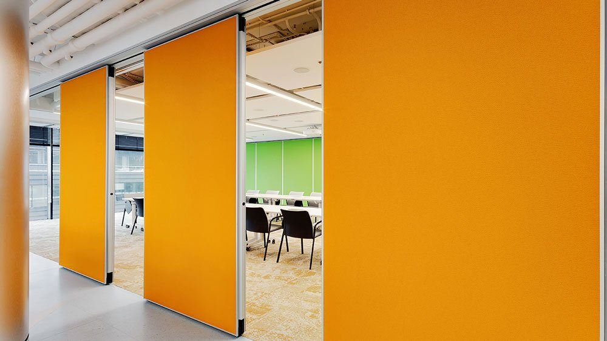
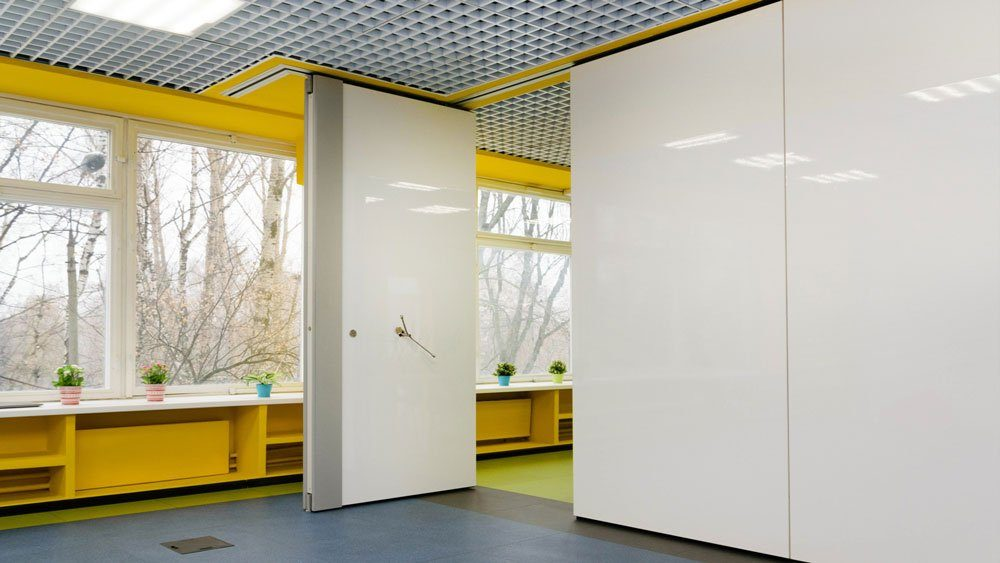
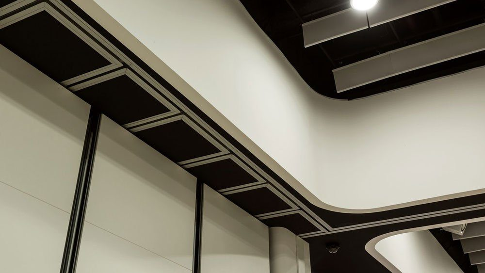
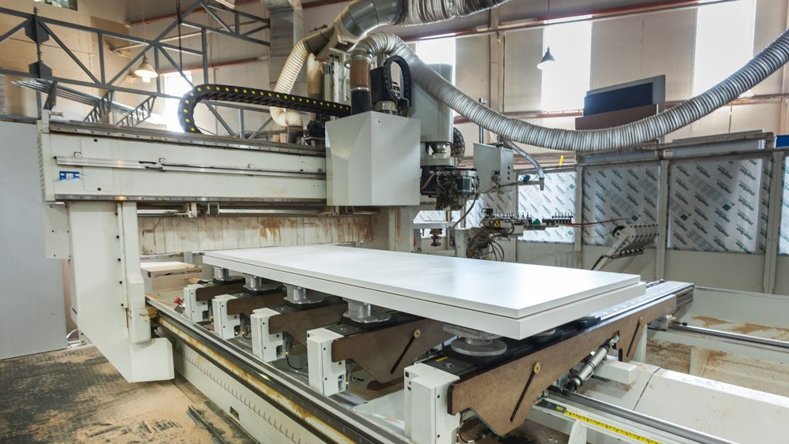
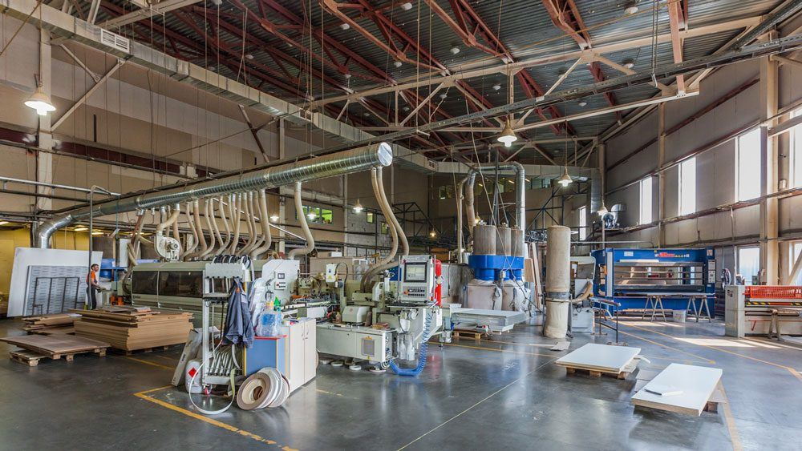
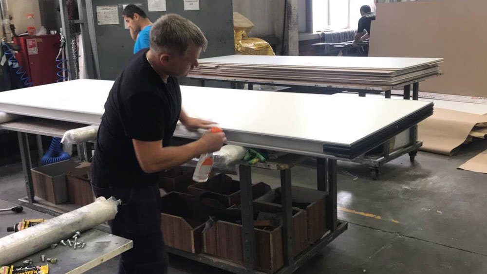

Консультация
Разработчик раздвижных перегородок, компания SmartWall предоставляет консультирование и техническую поддержку своим Заказчикам на всех этапах выполнения работ.
Помощь в выборе раздвижных перегородок
Во-первых, это консультирование при выборе систем трансформируемых перегородок, с учетом особенностей офиса заказчика и его задач по зонированию помещения.
SmartWall всегда старается выяснить потребности клиента, и помочь подобрать ему подходящий вариант, как с точки зрения планировки, таки с точки зрения имеющегося в наличии бюджета на работу по организации помещения. Для офиса требуется одно решение, для апартаментов и коттеджа – другое.
Помощь в выборе облицовки
Во-вторых, мы помогаем сделать правильный выбор облицовочных материалов для раздвижных перегородок. А это широкий ассортимент для глухих перегородок (ЛДСП, МДФ, натуральный шпон, гипсокартон, стекло магнезит, пластик, оклейка МДФ цветной пленкой, тканью). А так же, и для стеклянных (закаленное стекло, триплекс, оклеенное пленкой, с рисунков, с пескоструйной обработкой).
Кроме того, нужно согласовать наполнение секций перегородки. Особенно важно это для уровня звукоизоляции. От этого зависит, какую именно модель вам стоит выбрать, и какую максимальную звукоизоляцию она дает.
 |
 |
 |


Нужна ли Вам дверь, какая, какого размера. Все это важные вещи для Заказчика.
Разобраться в этом сложно и квалифицированная помощь профессионала в этом не помешает. Помимо этого, менеджеры SmartWall, кроме подбора материалов наполнения и облицовки помогут в изготовлении образцов для согласования с архитектором и дизайнером.
Далеко не так просто грамотно вписать раздвижную перегородку в имеющейся интерьер офиса. Наши дизайнеры помогут вам это сделать так, чтобы создать/сохранить единство стиля помещения.
Помощь при замере и составлении документации
В третьих, SmartWall обеспечивает выезд квалифицированного специалиста на замер непосредственно на сам объект. Он смотрит ситуацию на месте, делает все необходимые замеры, для последующего монтажа перегородки.
В четвертых, специалисты компании подготовят для вас всю необходимую документацию и чертежи, и в обязательном порядке рассчитают нагрузку на перекрытия, ведь именно к потолку крепятся направляющие раздвижных перегородок.
Помощь при изготовлении и сопровождении заказа
Наши специалисты будут курировать изготовление вашего заказа на нашем производстве. SmartWall осуществляет контроль на каждом этапе технологической цепочки изготовления перегородок, кроме того, контроль качества и сроков изготовления курирует и ваш менеджер.
 |
 |
 |


Кроме того, специалисты SmartWall будут осуществлять техническое сопровождение проекта на всех стадиях его осуществления, включая срок гарантии. После окончания гарантийного срока, вы можете заключить отдельный договор на техническое обслуживание наших перегородок.
Бесплатный замер
Оставьте заявку — замер бесплатно
Перезвоним, уточним задачу и подготовим расчёт. Можно прикрепить планировку или техническое задание.
+7 (499) 755-88-45